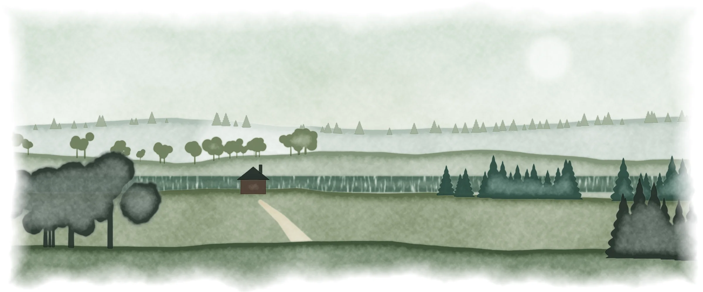
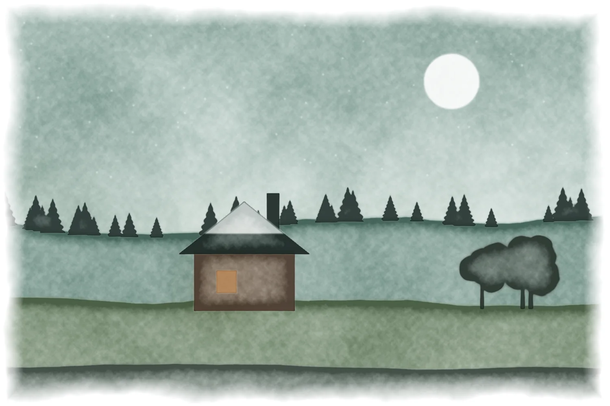
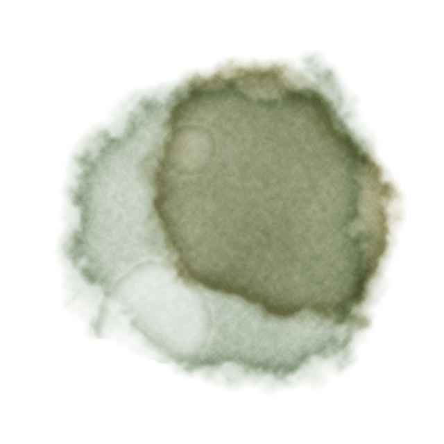
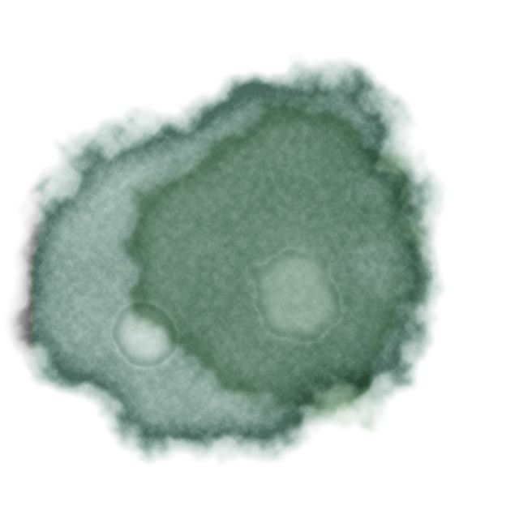
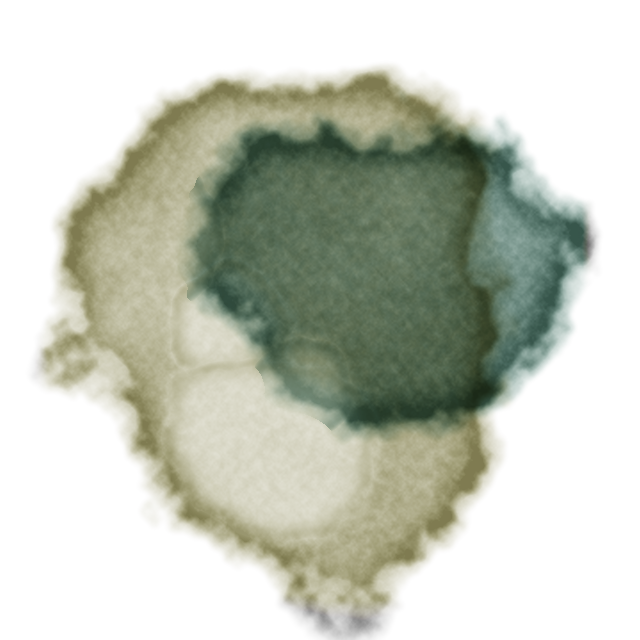

or, Old Tales Read Aloud
Fairy tales and old stories performed by a full cast, each with a soundscape made for it alone: birdsong in the wood, rain on the castle roof, a fire in the hills. Pull the covers up and listen.
with tales from grimm · andersen · poe · gibbon

Chapter the First · Tonight's Tale
A poor shoemaker cuts out his last scrap of leather and goes to bed. In the morning the shoes are finished, every stitch perfect. Someone is working in the night.
The recording is being prepared.
— 1 —
chapter the second
Told by the firesides of Hesse and written down by the Brothers Grimm, or dreamed up in Copenhagen by a cobbler's son named Andersen. Each is cast with its own voices and painted with its own weather.
— 5 —
chapter the third
For when the children are asleep: Poe's madmen and masked balls, and the night a gate in the walls of Rome opened from the inside.
— 31 —
afterword

the firstEvery story is scripted like a radio play. The narrator, the wolf, the witch and the little man by the fire each get their own voice, some of them blends of two. Pace, pitch and the room they speak in are directed line by line.

the secondNo sound is sampled. Birdsong, rain, embers, a spinning wheel and a frog's spring are synthesised from filtered noise and oscillators, then placed in rooms with convolution reverb, so each world sounds like itself.

the thirdHarp and strings, a music box playing Brahms, cello drones and a spectral waltz swell between scenes and duck under the voice whenever someone speaks. The finished mix is mastered to broadcast loudness.
Try the Studio with your own pages
— 53 —